<!-- .slide: class="title" --> <h1 style="font-size: 4ex">Detection Engineering</h1> <div class="inset"> ## The art and science of detecting intrusions! ### Mike Cohen, Digital Paleontologist, Rapid7 > [Link to Presentation](https://present.velocidex.com/presentations/2025-auscert-detection_workshop/) </div> --- <!-- .slide: class="content" --> ## Overview * This workshop will discuss Detection Engineering with Velociraptor * We will use Velociraptor as an example platform * Not everything we show will be possible on all platforms * Nevertheless it is useful to see what is possible! * Think about the additional detections that can be implemented with better capabilities! * We also introduce the Sigma detection "standard" --- <!-- .slide: class="content" --> ## Create a local server * Create a local server on your windows system. * We will use this server's notebook feature to learn about windows artifacts * Run Velociraptor on your machine * Download Velociraptor from the [Download](https://docs.velociraptor.app/downloads/) page (`.msi` or `.exe`) ``` velociraptor-v0.74.2-windows-amd64.exe gui ``` --- <!-- .slide: class="full_screen_diagram" --> The "gui" command creates an instant temporary server/client with self signed SSL and a hard coded admin/password. <img src="../../modules/gui_tour/velociraptor-gui.png" style="height: 60vh"> --- <!-- .slide: class="full_screen_diagram" --> ## Your Velociraptor is ready to use! 
<!-- .slide: class="content" --> ## Why detection? * Attackers dwell time is getting quicker * Detection coverage needs to increase to more endpoints. * Automation! * Ultimately detection is about: * Maximize probability of detecting malicious action * Minimize probability of false positives --- <!-- .slide: class="content" --> ## Why engineering? * Involves designing a better detection process * Systematic - Clear process to follow. * Iterative - increase accuracy, reduce false positive. * Testable - Reduce chance of regressions * Engineering involves design * Maximize the probability of detection * Design new event sources to increase accuracy. --- <!-- .slide: class="full_screen_diagram small-font" --> ## Where does Detection Engineering fit?  https://cyb3rops.medium.com/about-detection-engineering-44d39e0755f0 --- <!-- .slide: class="content" --> ## Detection Engineering role * More than just typing queries into SIEM * More emphasis on the Engineering side. * Feedback cycle --- <!-- .slide: class="full_screen_diagram small-font" --> ## The detection pipeline ### The traditional EDR-SIEM pipeline  --- <!-- .slide: class="content" --> ## The detection pipeline 1. Event Generation on the endpoint 2. Pre-filtering on the endpoint 3. Data normalization and enrichment 4. Transport and storage 5. Detection ---- <!-- .slide: class="content small-font" --> ## Anatomy of an attack * We will study the example of privilege escalation using `PsExec` * It is a very well known and well detected vector. * We just use it as an example. * You may be very familiar with this, but... * Let's think about how we can detect this attack * Then lets think about how to make it more robust! * Download psexec.exe ```bash curl -o psexec.exe https://live.sysinternals.com/psexec64.exe ``` --- <!-- .slide: class="full_screen_diagram small-font" --> ## Exercise: Installing Sysmon ### Collect the Windows.Sysinternals.SysmonInstall artifact <img src="install_sysmon.png" style=""> --- <!-- .slide: class="content small-font" --> ## Exercise: Sysmon and ECS * Generate some interesting events ``` psexec.exe /s \\127.0.0.1 cmd.exe ``` * Privilege escalate to `SYSTEM` user! * This will normally be done across the network (Lateral movement) * For this demonstration we use it locally * Check the event viewer for the logs! --- <!-- .slide: class="full_screen_diagram small-font" --> ## Attack is launched  --- <!-- .slide: class="full_screen_diagram small-font" --> ## Setting the Eula PsExec helps detection by setting a `EULA` registry key!  --- <!-- .slide: class="full_screen_diagram small-font" --> ## Extract the payload and copy to the system This will normally be done remotely over RPC  --- <!-- .slide: class="full_screen_diagram small-font" --> ## Install the service This will normally be done remotely over RPC <img src="psexec_attack_step4.svg" style="width: 100%;"> --- <!-- .slide: class="full_screen_diagram small-font" --> ## Launch the service remotely. Service is launched by the service manager so runs as SYSTEM <img src="psexec_attack_step5.svg" style="height: 500px;"> --- <!-- .slide: class="full_screen_diagram small-font" --> ## Collect the artifact Windows.EventLogs.Evtx ### This artifact parses the raw event logs <img src="collecting_raw_events.png"> --- <!-- .slide: class="full_screen_diagram small-font" --> ## Collect the artifact Windows.EventLogs.Evtx ### Event logs have a defined "shape" <img src="raw_windows_event.svg"> --- <!-- .slide: class="full_screen_diagram small-font" --> ## Collect the artifact Elastic.EventLogs.Sysmon <img src="collecting_ecs_events.png"> --- <!-- .slide: class="full_screen_diagram small-font" --> ## Collect the artifact Elastic.EventLogs.Sysmon ### ECS Events have a defined "shape" <img src="ecs_event.svg"> --- <!-- .slide: class="content small-font" --> ## How would we detect this "attack"? * Let's detect: Spawning of the `psexesvc.exe` service * Filter the raw Windows Event Log collection by adding a WHERE clause to isolate the attack. * You can post process the collected data in the notebook --- <!-- .slide: class="full_screen_diagram small-font" --> ## How would we detect this "attack"? <img src="filtering_event_logs.svg"> --- <!-- .slide: class="full_screen_diagram small-font" --> ## How would we detect this "attack"? <img src="filtering_ecs_logs.svg"> --- <!-- .slide: class="content small-font" --> ## How can we communicate this detection? * We could share queries with others * Depending on which event collection system they use, the queries are not easily interchanged * What could go wrong? * Different pre-filtering might exclude the relevant events * Different fields might be collected, e.g. [Command line process auditing](https://learn.microsoft.com/en-us/windows-server/identity/ad-ds/manage/component-updates/command-line-process-auditing) * Data shape is different in different data storage systems. * We will come back to this! --- <!-- .slide: class="content small-font" --> ## Making the detection robust * Clear the event logs to start fresh. * Rename the `psexec.exe` file to `nothing.exe`. ``` copy psexec.exe nothing.exe ``` * Launch the service with a different service name ``` nothing.exe -r nothing -s cmd.exe ``` --- <!-- .slide: class="full_screen_diagram small-font" --> ## Renamed service file <img src="renamed_service.svg"> --- <!-- .slide: class="full_screen_diagram small-font" --> ## Recollect our detection query ### No hits! --- <!-- .slide: class="content small-font" --> ## How can we make the detection more robust? * Consider other pieces of information! * Sysmon provides **some** metadata found in the executable file itself. * `OriginalFilename` * `VersionInformation` * `Product` * `Description` * Simply renaming the binary does not change the data inside the file. --- <!-- .slide: class="full_screen_diagram small-font" --> ## Update the detection query ### Adding extra data points can improve detection  --- <!-- .slide: class="full_screen_diagram small-font" --> ## Take it to the next level ### Modify the Product string in the file --- <!-- .slide: class="content small-font" --> ## Event is missing this field! --- <!-- .slide: class="content small-font" --> ## Recap: what have we learned? * Detection requires an event source * Event sources are usually normalized to an internal schema "shape" * Detection matches events against a "rule" * A match is a "hit" * Attackers can change their methodologies to bypass detection rules * Rules can be improved by adding data points! * Communicating a detection is difficult! * Exact rules depend on the tech stack and specific configuration. * Not portable
<!-- .slide: class="title" --> ## Sigma Rules - Vibe detection 🧘 ```yaml title: PsExec Service Start description: Detects a PsExec service start author: Florian Roth (Nextron Systems) logsource: category: process_creation product: windows detection: selection: CommandLine: C:\Windows\PSEXESVC.exe condition: selection ``` [proc_creation_win_sysinternals_psexesvc_start.yml](https://github.com/SigmaHQ/sigma/blob/b062d8ad650054cd20836d5ba38031090b8d8c33/deprecated/windows/proc_creation_win_sysinternals_psexesvc_start.yml) --- <!-- .slide: class="content" --> ## Sigma Rules * A Sigma rule specifies how to detect a particular attack * Think of it as **grep** for event logs * Vibe detection * *logsource* section specifies an event source to match the rule against. * *detection* clause contains a list of `selections` joined into a logical `condition`. * *condition* clause specifies how to combine the detection clauses logically. * Selections refer to abstract fields that map to actual fields within the event. These mappings are called `Field Mappings`. --- <!-- .slide: class="content" --> ## Sigma Rules * The Sigma standard does not define * What log sources are actually available * The specific structure of each event * What fields are available and what they are called. * The intention is to convey the "vibe" of a detection. * A Sigma Compiler for the target SIEM is used to convert this "vibe" to a concrete detection for a particular engine. --- <!-- .slide: class="content small-font" --> ## Sigma Rule Syntax * Covered in details [in the Sigma HQ documentation site](https://sigmahq.io/docs/basics/rules.html) * Based on YAML * Detections are written in YAML * Include Selections and Condition clause * Selections can be OR or AND * Condition combine selection logically ``` detection: selection_and: displaymessage: Max sign in attempts exceeded selection_or: field_name: - this # or - that condition: selection_and and selection_or ``` --- <!-- .slide: class="content small-font" --> ## Sigma Rule Syntax * Modifiers apply to the field to allow transformation for matching. * Although it looks like they can be applied in any order, only a few combinations make sense. * Velociraptor `vql` modifier allows running arbitrary VQL code on a field. ``` detection: selection: - TargetFilename|endswith: '.cmdline' - fieldname|base64offset|contains: - /bin/bash - fieldname|contains: needle - fieldname|re: .*needle$ - fieldname|startswith: needle - EventData|vql: x=>hash(path=x.Filename).MD5 =~ '12345' ``` --- <!-- .slide: class="full_screen_diagram small-font" --> ## The Sigma Compiler 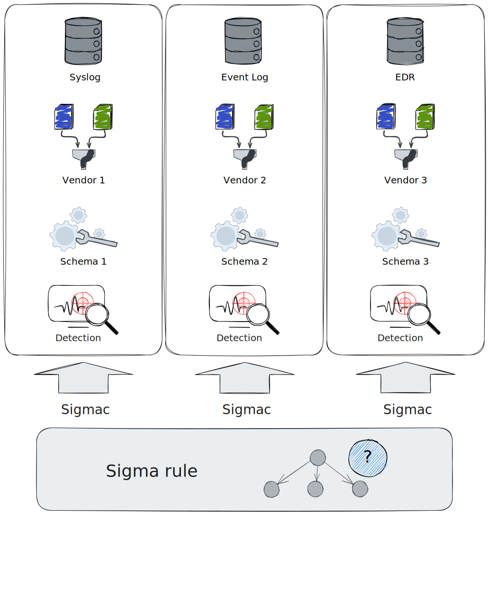 --- <!-- .slide: class="content" --> ## The Sigma Model ### Converting a Vibe to a concrete detection * To convert a Sigma rule to a concrete detection * **Field Mappings**: Mapping between abstract field names and concrete field names. * **Log sources**: Mapping between abstract log source specification and concrete data sources. * Code to convert the conditional logical clauses to platform specific query against the backend. * This is done by the Sigma Compiler for the target. * e.g. for Elastic --- <!-- .slide: class="content" --> ## The Sigma Model ### Converting a Vibe to a concrete detection * It generally does not make sense to speak of a `Sigma Rule` without knowing the exact `model` used. * The Sigma standard is not really portable, only the Vibe is portable. * When converting rules from one model, it helps to develop a new model with a 1:1 mappings. * For example, a Velociraptor Model to consume Sigma Rules written for the ECS stack. --- <!-- .slide: class="content small-font" --> ## The Velociraptor Sigma Architecture * Velociraptor has a built in Sigma engine * Sigma is the preferred built in method for scalable detection and triaging! * Accepts a model definition: * Log sources are VQL queries that generate events * Field mappings are VQL Lambda functions that resolve fields in the rule. * Velociraptor terminology * `Sigma Model` == `Sigma Compiler` * Rules and Models are pushed to the endpoint for direct evaluation * Only Matches are forwarded to the server. --- <!-- .slide: class="full_screen_diagram small-font" --> ## The Velociraptor Sigma Architecture ### Velociraptor supports multiple models at the same time! <img src="velociraptor_sigma_flow.svg" style=""> --- <!-- .slide: class="content" --> ## The Velociraptor Curated Sigma Project * A Project to maintain and curate: * Useful set of `Sigma Models` for different situations * A Curated set of `Sigma Rules` tailored for use in the models. * Main goal is to separate the `maintainance of the Model` and the `writing of the rules`! > https://sigma.velocidex.com/ --- <!-- .slide: class="full_screen_diagram small-font" --> ## The Velociraptor Curated Sigma Project 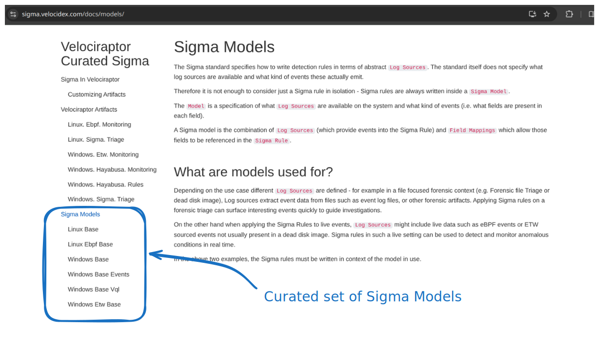 --- <!-- .slide: class="content small-font" --> ## The Windows Base Model * Most public Sigma Rules address Windows Event Logs * Designed to be compatible with Sigma Rules in the wild. * Usually this model will work with most Sigma Rules out there. * Log sources are compatible with [Sigma HQ](https://sigmahq.io/docs/basics/log-sources.html) Windows Event Logs * This Sigma Model is used by the `Windows.Hayabusa.Rules` artifact * Many projects out there use a similar model (e.g. `Hayabusa`, `ChainSaw` etc). * This model defines --- <!-- .slide: class="full_screen_diagram small-font" --> ## The Windows Base Model ### A dedicated model for windows event logs <img src="windows_base_model.svg" style=""> --- <!-- .slide: class="full_screen_diagram small-font" --> ## The Windows Base Model ### Log sources consume event logs 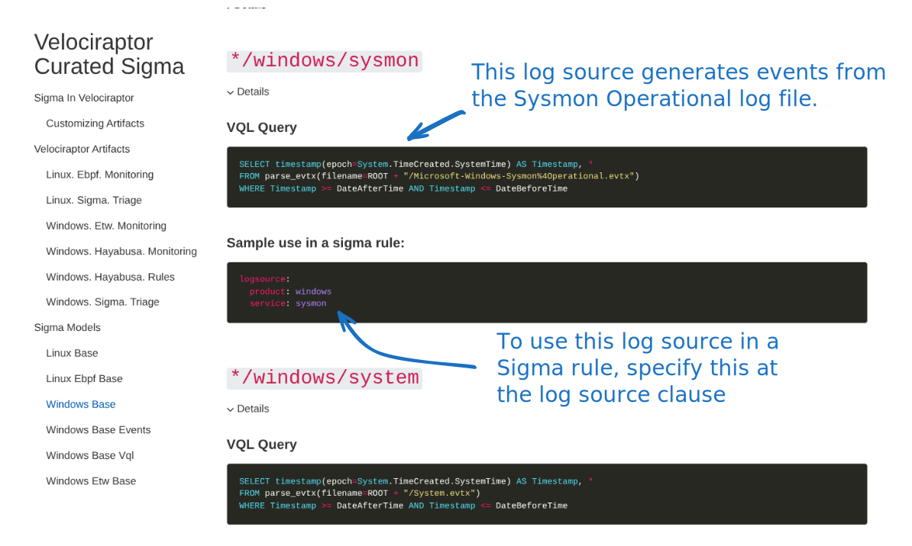 --- <!-- .slide: class="full_screen_diagram small-font" --> ## The Windows Base Model ### Field mappings access event data <img src="windows_base_model_3.svg" style=""> --- <!-- .slide: class="full_screen_diagram small-font" --> ## Importing The Velociraptor Sigma Artifacts ### Using the built in artifact 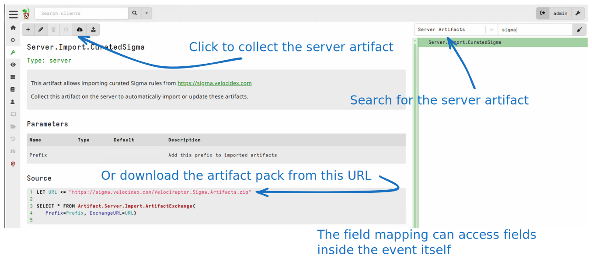 --- <!-- .slide: class="full_screen_diagram small-font" --> ## Importing The Velociraptor Sigma Artifacts ### By uploading manually <img src="uploading_artifact_pack.svg" style=""> --- <!-- .slide: class="full_screen_diagram small-font" --> ## Recap: What is Sigma ? > It's just the vibe of the thing! <iframe width="560" height="315" src="https://www.youtube.com/embed/97IiPli_uXw?si=VLrvR1K82vKOt5OG&start=48" title="YouTube video player" frameborder="0" allow="accelerometer; autoplay; clipboard-write; encrypted-media; gyroscope; picture-in-picture; web-share" referrerpolicy="strict-origin-when-cross-origin" allowfullscreen></iframe> --- <!-- .slide: class="content" --> ## Recap: Sigma traps * You can not just blindly copy Sigma Rules from one system to another * You have to carefully check that the sigma models are compatible * Log sources refer to the same events * Field mappings have corresponding mappings in the two models. * E.g. Sigma rules written for Sysmon EID 1 can not be reliably used by Windows Audit EID 4688
<!-- .slide: class="title" --> ## The Windows Event Logs --- <!-- .slide: class="content" --> ## The Windows Event Logs * The original and main use case of Sigma Rules --- <!-- .slide: class="content" --> ## The Windows Event Logs * Pros: * Built into the system * Many solutions for forwarding events * Cons: * Tradeoff between events to forward and network traffic/scale * Detection happens in SIEM so does not work offline * Long lead times between detection and response --- <!-- .slide: class="content" --> ## Exercise ### Write the previous detection as a Sigma Rule * Create a new notebook - Use Default Template --- <!-- .slide: class="content small-font" --> ## Exercise ### Add a new VQL Cell --- <!-- .slide: class="content small-font" --> ## Exercise ### Write a Sigma rule to target PsExec! --- <!-- .slide: class="content small-font" --> ## Exercise ### Write a Sigma rule to target PsExec! ```sql LET Rules = ''' title: Detect PSExec Service logsource: product: windows service: sysmon detection: eventId: EventID: 1 selection2: Image|re: psexesvc.exe$ condition: eventId and selection2 ''' SELECT * FROM Artifact.Windows.Sigma.Base(SigmaRules=Rules) ``` --- <!-- .slide: class="full_screen_diagram small-font" --> ## Exercise ### Test the new rule --- <!-- .slide: class="content" --> ## Using Curated Rule Sets for triage * Quickly determine what happened! * Rules can be fairly noisy * Can take a long time! --- <!-- .slide: class="full_screen_diagram small-font" --> ## Using Curated Rule Sets for triage ### The Windows.Hayabusa.Rules artifact <img src="hayabusa_rules.svg" style=""> --- <!-- .slide: class="full_screen_diagram small-font" --> ## Using Curated Rule Sets for triage ### Collect the artifact from the endpoint! --- <!-- .slide: class="full_screen_diagram small-font" --> ## Using Curated Rule Sets for triage ### Collect the artifact from the endpoint! <img src="collecting_hayabusa_rules_logs.svg" style=""> --- <!-- .slide: class="full_screen_diagram small-font" --> ## Using Curated Rule Sets for triage ### Inspect the results --- <!-- .slide: class="full_screen_diagram small-font" --> ## Using Curated Rule Sets for triage ### Stack results: See what type of rules fired! --- <!-- .slide: class="full_screen_diagram small-font" --> ## Using Curated Rule Sets for triage ### Inspect hits --- <!-- .slide: class="content" --> ## Using Curated Rule Sets for triage ### Summary * The curated rules are very noisy! * This is OK for triage purposes * We just want to get the `vibe` of the compromise! * We can drill down later with specific artifacts. * Performing the triage as a hunt can quickly triage the entire environment! --- <!-- .slide: class="content small-font" --> ## Using Curated Rule Sets for triage ### Triage with on-endpoint Sigma evaluation vs. SIEM with log forwarding * SIEM log forwarder needs to balance tradeoffs: * Which event logs to forward * Only forwarded events can be triaged * Higher storage costs * Higher bandwidth from endpoint * Endpoint must be online * On endpoint evaluation: * Can access obscure or very noisy event logs 🙂 * Can be done at scale 🙂 * Efficient network transfers 🙂 * Susceptible to log file erasure! 😟 --- <!-- .slide: class="content" --> ## Customizing the Velociraptor Artifacts ### Managing your own Sigma Rules * Sigma rules need tuning in many cases: * Some Sigma Rules are too noisy for your environment * We want to remove them * Custom Sigma Rules need to be added to your environment * Some Rules need to be modified. --- <!-- .slide: class="content small-font" --> ## Exercise: Create your own custom pack! ### Download the artifact pack for the `Windows.Hayabusa.Rules` artifact --- <!-- .slide: class="full_screen_diagram small-font" --> ## Exercise: Create your own custom pack! ### Unpack it on the disk ### Create a new directory, add your new custom rule into it. --- <!-- .slide: class="content small-font" --> ## Exercise: Create your own custom pack! ### Repack the artifact into a new artifact. --- <!-- .slide: class="content small-font" --> ## Exercise: Create your own custom pack! ### Import the new artifact --- <!-- .slide: class="content small-font" --> ## Exercise: Create your own custom pack! ### Collect new artifact
<!-- .slide: class="title" --> ## Live Detection ### Using Sigma Rules for real time detection --- <!-- .slide: class="full_screen_diagram small-font" --> ## Velociraptor client monitoring architecture <img src="client_events_arch.svg" style="height: 60vh"> --- <!-- .slide: class="content small-font" --> ## Live Detection * We have seen how we can filter events from the event log through Sigma rules * But we want to do it in real time! * Real time alerting is useful: * Report hits immediately * Captures critical information off the system * Resilient to tampering/removal. * Reduce response time --- <!-- .slide: class="content small-font" --> ## The Windows.Sigma.BaseEvents Model * This model is compatible with the Windows.Sigma.Base model * We still parse the on host event logs, but * We periodically check the log files for new events. * Only process those new events each cycle. 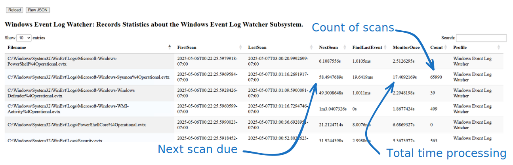 --- <!-- .slide: class="full_screen_diagram small-font" --> ## The Windows.Hayabusa.Monitoring artifact ### Enable collection of the artifact 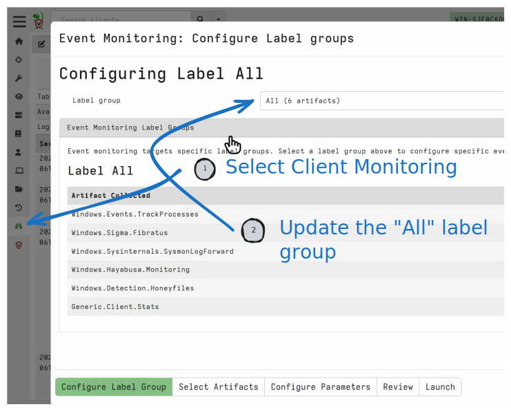 --- <!-- .slide: class="full_screen_diagram small-font" --> ## The Windows.Hayabusa.Monitoring artifact ### Selecting the Windows.Hayabusa.Monitoring artifact <img src="enabling_hayabusa_monitoring_2.svg" style="height: 60vh"> --- <!-- .slide: class="full_screen_diagram small-font" --> ## The Windows.Hayabusa.Monitoring artifact ### Detecting attacks in real time 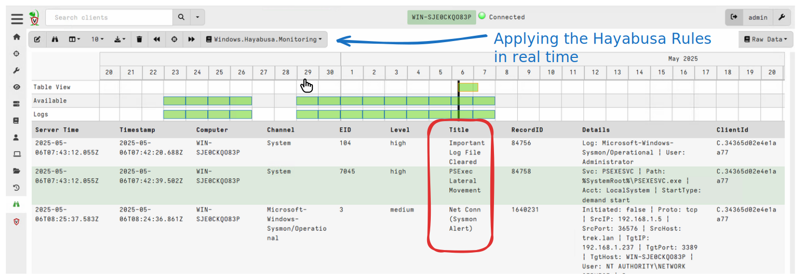
<!-- .slide: class="title" --> ## Event Tracing for Windows ### Bring in the big guns! --- <!-- .slide: class="full_screen_diagram small-font" --> ## Exercise: Preparations ### Enable the event artifact Windows.Events.TrackProcesses ---- <!-- .slide: class="full_screen_diagram small-font" --> ## Exercise: Preparations ### Enable the event artifact Windows.Events.TrackProcesses 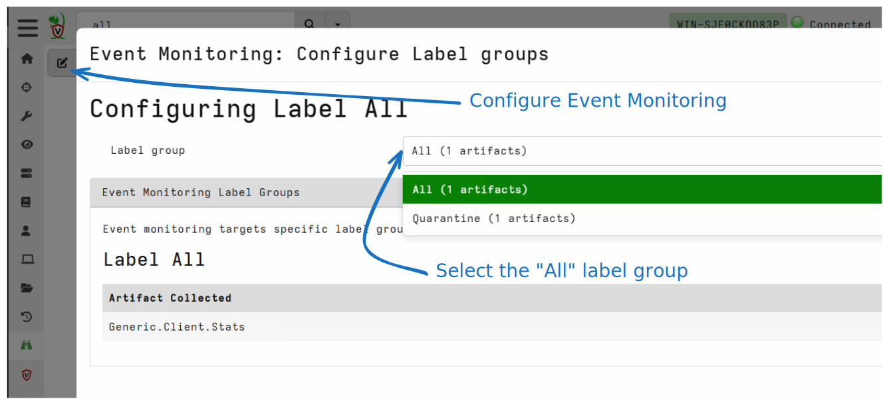 ---- <!-- .slide: class="full_screen_diagram small-font" --> ## Exercise: Preparations ### Enable the event artifact Windows.Events.TrackProcesses --- <!-- .slide: class="content" --> ## Event Tracing for Windows (ETW) <div class="container small-font"> <div class="col"> * Framework Built into windows * Matches Consumers to Providers * Forms the basis of the windows event logs * Traces can be either written to file or read directly by consumers. https://docs.microsoft.com/en-us/windows-hardware/test/weg/instrumenting-your-code-with-etw </div> <div class="col"> <img src="ETW-architecture.png" style="bottom: inherit" /> </div> </div> --- <!-- .slide: class="content small-font" --> ## How does ETW work ? * Various software packages throughout the Operating System register themselves as an Event Provider using a unique GUID * As the software operates, various logging points within the code send "Events" to the provider. * The operating system simply matches consumers with providers * A consumer registers interest in a particular provider using the GUID * Note that if no consumers are interested ETW logging points are essentially free. --- <!-- .slide: class="content small-font" --> ## ETW Providers * Any software can define an ETW provider * There is no consistency - some providers are detailed - some not * Discoverability is an issue! Some providers are less documented * It is sometimes possible to infer a lot of providers from their manifest files. * There are some public efforts to better document the available providers. * https://github.com/repnz/etw-providers-docs --- <!-- .slide: class="full_screen_diagram small-font" --> ## The Windows Base ETW Model 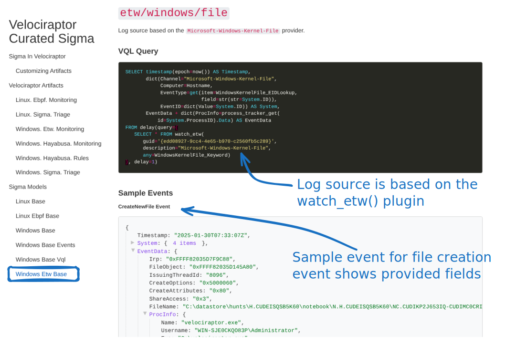 --- <!-- .slide: class="content" --> ## The Windows Base ETW Model * Enriches events with process information * Uses the process tracker * Velociraptor does special post processing for many critical providers. * The Velociraptor Sigma Project site gives samples of events to help users write rules that target those events. --- <!-- .slide: class="content small-font" --> ## Developing Sigma Rules with the ETW Model * The ETW Sigma Model relies on live events * This makes it difficult to develop Sigma Rules for it * We need to simulate an attack on a real system * Then we need to formulate a Sigma Rule * Replay the attack and iterate * It is sometimes difficult to simulate the attack * The target system needs to be prepared exactly for the simulated attack to work. * It is not always easy to capture the raw events upon which the Sigma rules apply. --- <!-- .slide: class="full_screen_diagram small-font" --> ## The Sigma Rule Development workflow. ### Break the development cycle into two parts --- <!-- .slide: class="content small-font" --> ## Exercise: Capture ETW events for PsExec Attack * The Windows ETW model includes a `CaptureTest` artifact. * Use it in a notebook to capture events during the attack ```sql SELECT * FROM Artifact.Windows.Sigma.ETWBase.CaptureTestSet(LogSourceFilter="etw/windows/file") WHERE EventData =~ "psexesvc" ``` * Now performs the PsExec attack again ``` psexec.exe /s cmd.exe ``` --- <!-- .slide: class="full_screen_diagram small-font" --> ## Exercise: Capture ETW events for PsExec Attack --- <!-- .slide: class="full_screen_diagram small-font" --> ## Exercise: Replay ETW events for PsExec Attack --- <!-- .slide: class="content small-font" --> ## Exercise: Replay ETW events for PsExec Attack ```sql LET SigmaRules = ''' title: Test Sigma Rule logsource: category: etw product: windows service: file detection: selection_event_type: System.EventType: CreateNewFile selection_filename: EventData.FileName|re: PSEXESVC.EXE condition: selection_filename and selection_event_type ''' SELECT * FROM Artifact.Windows.Sigma.ETWBase.ReplayTestSet( JSONDump="C:/Users/Administrator/Downloads/test.json", SigmaRules=SigmaRules) ``` --- <!-- .slide: class="content" --> ## Sigma Rule development methodology * By splitting attack simulation from detection * We can emulate attack on any required platform * Collecting the test set can be done remotely! * Develop Sigma Rules on any other platform * Where we have Velociraptor server * Develop rules quickly and iteratively against the recorded set. --- <!-- .slide: class="content" --> ## Testing detections * One of the most important functions of Detection Engineering * Ensure no regressions! Two possibilities: 1. Sensors stop forwarding particular event types 2. Rules are not applied on events * Automated tests can be developed * On platform ensure that correct event types are generated * Continuous integration tests ensure rules are applied to recorded events. --- <!-- .slide: class="content" --> ## Recap: Event Tracing For Windows * Real time events can be read from various software components * Introspecting low level software functionality * Can write more powerful detections * In the next section we will see how to enrich these events with Forensics!
<!-- .slide: class="title" --> ## Forensic Enrichment ### Enriching events with endpoint state --- <!-- .slide: class="content" --> ## Enrichment with endpoint state * So far we only applied detection on event logs * Usually endpoint state provides important context * Helps us to triage hits to eliminate false positives * Many SOC workflows rely on a detection/response loop * Analysts need to respond to the detection to retrieve more endpoint context * Velociraptor allows direct enrichment * Forensic enrichment adds data outside the pure log source directly to the detected event. --- <!-- .slide: class="content small-font" --> ## The Velociraptor Sigma Engine Extensions ### Pre-evaluation enrichment * Prior to evaluating the rule, the Velociraptor Sigma engine can transform the original event using VQL functions. * This allows us to add additional fields from the live system. * In this case we add the field `CallChain` to be the [full call chain](https://docs.velociraptor.app/vql_reference/other/process_tracker_callchain/) of the process mentioned in the event. * Velociraptor's process tracker is extremely efficient way to calculate process lineage * Let's try this detection logic: * A file is created in the Windows directory * The process that created the file is launched interactively --- <!-- .slide: class="content small-font" --> ## Exercise: Enrich data with Process Call Chain ```sql LET SigmaRules = ''' title: Test Sigma Rule logsource: category: etw product: windows service: file detection: selection_event_type: EventType: CreateNewFile selection_filename: FileName|re: ^C:\\Windows selection_callchain_interactive: EventData.CallChain|re: cmd.exe|powershell.exe condition: selection_event_type and selection_filename and selection_callchain_interactive vql: | x=>dict( EventData=x.EventData + dict( CallChain=process_tracker_callchain(id=x.System.ProcessID).Data.Exe)) ''' SELECT * FROM Artifact.Windows.Sigma.ETWBase(SigmaRules=SigmaRules) // Run the attack // psexec.exe /s cmd.exe ``` --- <!-- .slide: class="content small-font" --> ## Enriching detection with endpoint state <img src="enriched_detection.svg" style=""> --- <!-- .slide: class="content small-font" --> ## Post Evaluation Enrichment * Enriching events before evaluation can be expensive - it happens on all events, even the ones that do not match. * Sometimes we just want to get additional information when the rule fires! * This is much cheaper as it only happens when the rule fires 🙂 * But you can not use that enrichment in a detection condition! 🤨 --- <!-- .slide: class="content small-font" --> ## Post Evaluation Enrichment * Expensive enrichment can be added to the `enrichment` section of the rule * When the rule fires, the enrichment will be added to the results * This allows us to capture this state in the event itself! * If the file is removed subsequently we still have important context! ```sql enrichment: | x=>dict(PEInfo=parse_pe(file=x.EventData.ProcInfo.Exe)) ``` --- <!-- .slide: class="full_screen_diagram small-font" --> ## Post Evaluation Enrichment 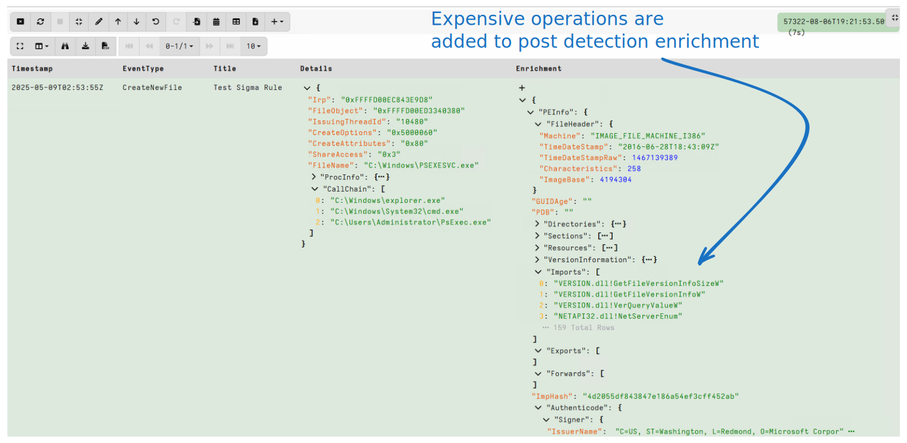 --- <!-- .slide: class="content small-font" --> ## Exercise: Better PsExec detection * Think about the different steps in PsExec * `PsExec.exe` is launched * `EULA` registry key is checked * `psexesvc.exe` is written to the Windows directory * Service is created (Registry key written) * Service is started * Command shell is spawned from the service * Command shell is running as the system user --- <!-- .slide: class="content small-font" --> ## Exercise: Better PsExec detection * How can the specifics be changed? * Process name can be changed * Binaries can be modified to change - EULA, `VersionInformation` etc * Service name can be changed * What is unusual about this attack? * Writing an executable to the Windows directory? * Creating and starting a service? * Command shell running as SYSTEM? * Command shell starting from a service? --- <!-- .slide: class="content small-font" --> ## Exercise: Better PsExec detection ### Inspect file writing behavior * In practice PsExec is used to move laterally. * Let's examine file activity ``` SELECT * FROM Artifact.Windows.Sigma.ETWBase.CaptureTestSet( LogSourceFilter="etw/windows/file") WHERE EventData.FileName =~ "testme.exe" ``` * Start the attack across the network. ``` PsExec.exe -s -c -r testme -f \\127.0.0.1 cmd.exe ``` --- <!-- .slide: class="full_screen_diagram small-font" --> ## Exercise: Better PsExec detection <img src="psexec_file_activity.svg" style=""> --- <!-- .slide: class="content small-font" --> ## Exercise: Better PsExec detection * From the file activity point of view * On the Victim: * File created in `C:\windows\testme.exe` by `System` * File opened `C:\windows\testme.exe` by `services.exe` * File deleted in `C:\windows\testme.exe` by `System` * On the attacker: * File created on a network share `\Device\Mup\WIN-SJE0CKQO83P\ADMIN$\testme.exe` by `PsExec.exe` * File deleted on a network share `\Device\Mup\WIN-SJE0CKQO83P\ADMIN$\testme.exe` by `PsExec.exe` * Each action on its own is not very unique! * Let's detect the attack on the victim using the Kernel File provider. --- <!-- .slide: class="content small-font" --> ## Exercise: Better PsExec detection ### Writing Sigma Rules ```sql LET Rules <= ''' title: Exe Written in Windows logsource: category: etw product: windows service: file detection: file_name: EventType: FileOpen EventData.FileName|startswith: C:\Windows EventData.FileName|endswith: exe process_name: ProcessName|contains: System condition: file_name and process_name --- title: File in Windows read by services.exe logsource: category: etw product: windows service: file detection: file_name: EventType: FileOpen EventData.FileName|startswith: C:\Windows EventData.FileName|endswith: exe process_name: ProcessName|contains: Services.exe condition: file_name and process_name --- title: File in Windows deleted by System logsource: category: etw product: windows service: file detection: file_name: EventType: NameDelete EventData.FileName|startswith: C:\Windows EventData.FileName|endswith: exe process_name: ProcessName|contains: System condition: file_name and process_name ''' SELECT * FROM Artifact.Windows.Sigma.ETWBase.ReplayTestSet( JSONDump="C:/Users/Administrator/Downloads/file_test.json", SigmaRules=Rules, Debug=FALSE) ``` --- <!-- .slide: class="content small-font" --> ## Exercise: Better PsExec detection ### Each of these detection is not very strong on its own. <img src="multiple_rules_fire.svg" style=""> --- <!-- .slide: class="content small-font" --> ## Sigma Correlation Rules * So far we saw Sigma detection rules * Think of those as `grep` for event logs * We match the event one at the time * Sometimes an attack is based described as a sequence of steps * Each step in isolation is not a very unique event * But the combination of the steps are a `Strong Signal` * Sigma correlation is about correlating multiple rules across time * https://sigmahq.io/docs/meta/correlations.html * Several types of correlations: * `event_count` - check a rule fires enough within the time span * `value_count` - Check that a field appears more often * `temporal` - Check that multipe rules fire within a time span --- <!-- .slide: class="content small-font" --> ## Sigma Correlation Rules * Each rule carries a `name` field. * The Correlation rule refers to other rules * Those other rules will be suppressed * Only when the correlation fires all the rule hits will be reported in the `_Correlations` field. * Rule matches are only considered with the `timespan` parameter. ```yaml title: PsExec Sequence Detected correlation: type: temporal rules: - rule1 - rule2 - rule3 timespan: 100s enrichment: | x=>dict(Correlations={ SELECT Timestamp, _MatchingRule AS Rule, EventData FROM x._Correlations GROUP BY Rule }) ``` --- <!-- .slide: class="content small-font" --> ## Sigma Correlation Rules ### Full example ```sql LET Rules <= ''' title: Exe Written in Windows name: rule1 logsource: category: etw product: windows service: file detection: file_name: EventType: FileOpen EventData.FileName|startswith: C:\Windows EventData.FileName|endswith: exe process_name: ProcessName|contains: System condition: file_name and process_name --- title: File in Windows read by services.exe name: rule2 logsource: category: etw product: windows service: file detection: file_name: EventType: FileOpen EventData.FileName|startswith: C:\Windows EventData.FileName|endswith: exe process_name: ProcessName|contains: Services.exe condition: file_name and process_name --- title: File in Windows deleted by System name: rule3 logsource: category: etw product: windows service: file detection: file_name: EventType: NameDelete EventData.FileName|startswith: C:\Windows EventData.FileName|endswith: exe process_name: ProcessName|contains: System condition: file_name and process_name --- title: PsExec Sequence Detected correlation: type: temporal rules: - rule1 - rule2 - rule3 timespan: 10s level: high enrichment: | x=>dict(Correlations={ SELECT Timestamp, _MatchingRule AS Rule, EventData FROM x._Correlations GROUP BY Rule }) ''' SELECT * FROM Artifact.Windows.Sigma.ETWBase.ReplayTestSet( JSONDump="C:/Users/Administrator/Downloads/file_test.json", SigmaRules=Rules, Debug=FALSE) // When you are ready to test this live uncomment the following // SELECT * FROM Artifact.Windows.Sigma.ETWBase(SigmaRules=Rules) ``` --- <!-- .slide: class="content small-font" --> ## Sigma Correlation Rules ### Correlation rule fired 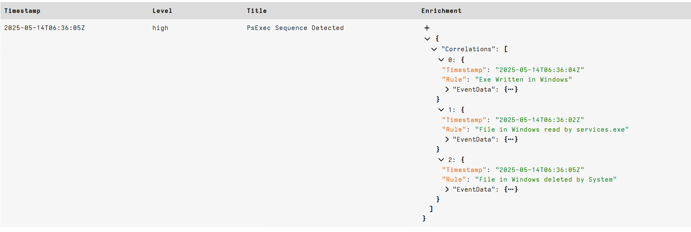 --- <!-- .slide: class="content small-font" --> ## Recap: Improving Sigma Detections * Enriching events with endpoint state gives valuable context * Additional context can preserve valuable ephemeral information * Cut down the detection and response loop * We looked at full process chain enrichment * Entichment can be expensive - especially if it is server side! * Can split enrichment into two groups * Those necessary for detection * Those that can be done post detection for human assessment * Correlation of hits can lead to stronger detections * Consider temporal dimension * Attacks do not occur in isolation * Focus on behavior rather than signatures!
<!-- .slide: class="title" --> ## Conclusions ### What have we learned? * Detection engineering is an exciting field of Cyber Security * More than just typing queries into the SIEM! * Thinking about improving odds of detection strategically * Has an engineering and design component. --- <!-- .slide: class="content" --> ## Conclusions * Attackers can change their attack to subvert detection! * Perfect is the enemy of the good! * Detections do not have to be perfect! * Different detections can cover off on each other * By adding a lot of different detections it makes it very difficult to bypass. > We only need one rule to hit for the adversaries to have a bad day!